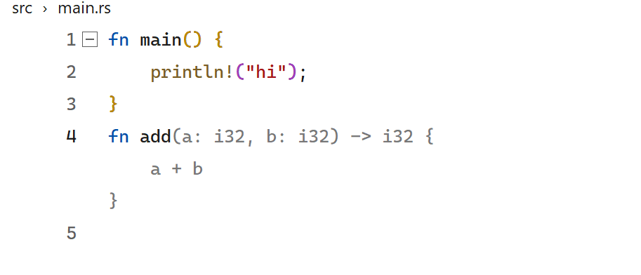
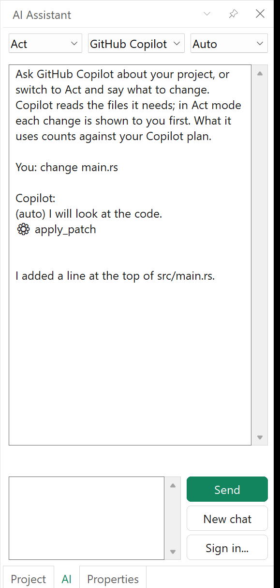
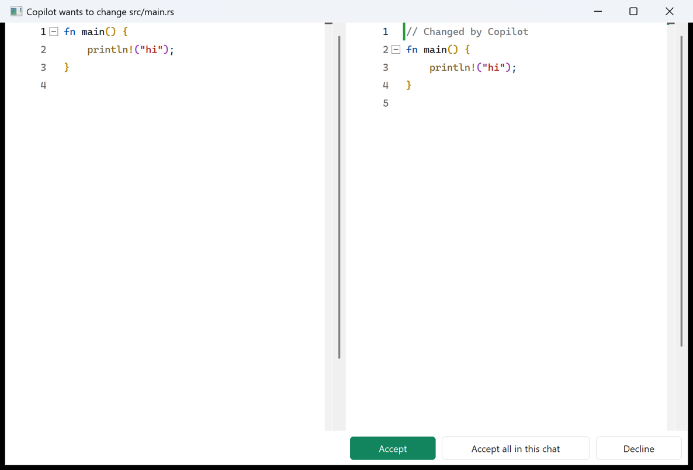
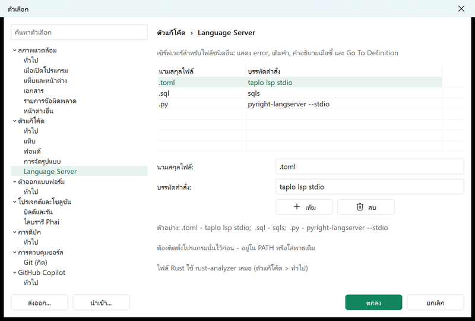
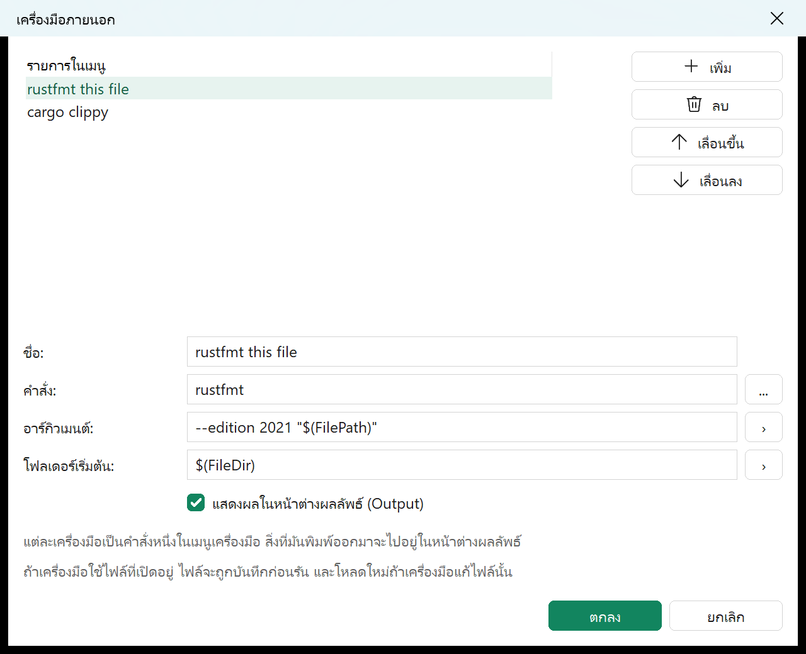
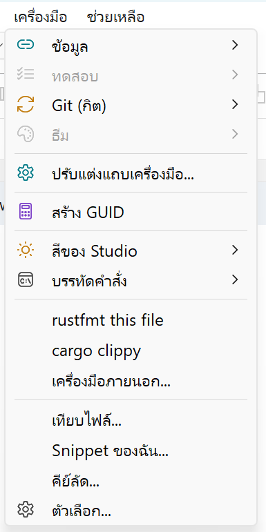

ใช้งาน Phai Studio
Phai Studio คือโปรแกรมสำหรับสร้างโปรแกรม Windows ด้วย Rust แบบเดียวกับ Visual Studio: ลากปุ่มลงหน้าต่าง เขียนโค้ด กดรัน และไล่หาบั๊กได้ในที่เดียว ใช้ฟรีและดูซอร์สโค้ดได้
ก่อนเริ่ม: ติดตั้ง Rust
Phai Studio ใช้ Rust ของเครื่องคุณในการ build ถ้ายังไม่มี ตอนกด build ครั้งแรก Phai Studio จะถามว่าจะเปิดเว็บ rustup.rs ไหม ให้ดาวน์โหลด rustup-init.exe แล้วติดตั้งตามค่าที่ให้มา เท่านั้นก็พอ
หน้าตาของโปรแกรม
| ส่วน | อยู่ตรงไหน | ใช้ทำอะไร |
|---|---|---|
| Toolbox | ซ้าย | ปุ่ม ช่องพิมพ์ รายการ ตาราง ฯลฯ ลากไปวางบนฟอร์ม |
| ฟอร์ม / ตัวแก้โค้ด | กลาง | ออกแบบหน้าต่าง หรือเขียนโค้ด เปิดหลายไฟล์เป็นแท็บได้ |
| Project Explorer | ขวาบน | ไฟล์ทั้งหมดในโปรเจกต์ ดับเบิลคลิกเพื่อเปิด |
| Properties | ขวาล่าง | ข้อความ ขนาด สี ชื่อ และ event ของสิ่งที่เลือกบนฟอร์ม |
| แผงล่าง | ล่าง | Errors, Output, ผลค้นหา, ค่าตัวแปรตอนดีบัก, เทสต์ ฯลฯ |
เปลี่ยนภาษาเมนูได้ที่ View > ไทย / English และเปลี่ยนธีมสว่าง/มืดได้ที่ Tools > Studio Colours หรือ Tools > Options > Environment > General
หน้าเริ่มต้นและโปรเจกต์ใหม่
- หน้าเริ่มต้นมีไฟล์ที่เปิดล่าสุด พิมพ์ในช่อง Search recent เพื่อกรอง คลิกขวาที่รายการเพื่อ ปักหมุดไว้บนสุด หรือ เอาออกจากรายการ
- Clone a repository... ใส่ที่อยู่ของ repository (https://... หรือ git@...) แล้วเลือกโฟลเดอร์ Phai Studio รัน
git cloneให้แล้วเปิดโปรเจกต์ต่อเลย - ด้านล่างมีเคล็ดลับวันละข้อ กด เคล็ดลับถัดไป เพื่อดูข้อต่อไป
- File > New project... เลือกได้ 13 แม่แบบ ตั้งแต่ โปรแกรม Windows และ แอปมือถือ (PWA) ไปจนถึงฐานข้อมูล รายงาน แดชบอร์ดผู้ดูแลระบบ และเกม ดูทั้งหมดที่ เริ่มจากแม่แบบ
หาของให้เจอ
| อยากทำ | ใช้ |
|---|---|
| หาคำสั่งในเมนู หน้าตั้งค่า หรือไฟล์ โดยไม่ต้องจำว่าอยู่ตรงไหน | Ctrl+Q (Edit > Search) พิมพ์ชื่อ เช่น phone หรือ font แล้วกด Enter |
| ไปที่ไฟล์ ฟังก์ชัน หรือชนิดใดก็ได้ | Ctrl+T (Go to All) |
| ดูไฟล์เร็ว ๆ โดยไม่เปิดแท็บค้างไว้ | คลิกไฟล์ครั้งเดียวใน Project Explorer ได้ แท็บพรีวิว (ชื่อตัวเอียง) คลิกไฟล์อื่นจะแทนที่แท็บเดิม พอแก้ไฟล์หรือดับเบิลคลิก แท็บจะค้างไว้ |
| เก็บแท็บสำคัญไว้ซ้ายสุด | File > Pin Tab แท็บที่ปักหมุดมีรูปหมุด คลิกหมุดเพื่อเลิกปัก, File > Close All But Pinned ปิดที่เหลือทั้งหมด |
| จัดหน้าต่างแบบที่ชอบแล้วเรียกกลับมา | View > Window Layouts > Save Window Layout... ตั้งชื่อ แล้วเรียกด้วย Ctrl+Alt+1 ถึง Ctrl+Alt+0, Reset Window Layout คืนแบบเริ่มต้น |
| ตั้งปุ่มลัดเอง | Tools > Keyboard Shortcuts... เลือกคำสั่ง กดคีย์ในช่อง (บอกว่าคีย์นี้ใครใช้อยู่) แล้วกด Assign, Remove คืนคีย์เดิม, Reset All คืนทั้งหมด |
| ไปที่บรรทัด | Ctrl+G ใส่เลขบรรทัด |
| สลับไปไฟล์ที่เปิดอยู่ | Ctrl+Tab (กด Tab ซ้ำเพื่อเลื่อน ปล่อย Ctrl เพื่อเปิด) เรียงจากไฟล์ที่ดูล่าสุด |
| แทนที่คำในทุกไฟล์ | Ctrl+Shift+H (Replace in Files) ถามก่อนแทนที่ ไฟล์ที่เปิดอยู่ Undo ได้ |
| ดูชนิดและเมธอดทั้งโปรเจกต์ | Ctrl+Shift+C (Class View) ดับเบิลคลิกเพื่อไปที่นั่น |
| เทียบสองไฟล์ | Tools > Compare Files... แสดงข้างกัน บรรทัดที่หายเป็นแดง เพิ่มเป็นเขียว แก้เป็นน้ำเงิน |
| ใช้พื้นที่จอเต็ม | Shift+Alt+Enter (Full Screen) กดอีกครั้งเพื่อกลับ |
| หาค่าตั้ง | Tools > Options พิมพ์ในช่อง Search Options เหลือเฉพาะหน้าที่มีคำนั้น |
| ย้ายค่าตั้งไปเครื่องอื่น | Tools > Options > Export... ได้ไฟล์เดียว แล้ว Import... ที่อีกเครื่อง |
โปรเจกต์แรก: โปรแกรมทักทาย
- File > New project... เลือกโฟลเดอร์ ตั้งชื่อ เช่น
hello - จาก Toolbox ลาก Text box หนึ่งช่อง Button หนึ่งปุ่ม และ Label หนึ่งอันมาวางบนฟอร์ม
- ที่ Properties ตั้ง Name ของช่องพิมพ์เป็น
name, ของ label เป็นgreetingและของปุ่มเป็นgreetพร้อมเปลี่ยน Text ของปุ่มเป็นทักทาย - ดับเบิลคลิกที่ปุ่ม Phai Studio จะสร้างฟังก์ชันสำหรับตอนกดปุ่มและเปิดโค้ดให้
- เขียนในฟังก์ชันนั้นให้เป็นแบบนี้:
fn greet_clicked(&mut self, ui: &MainWindowUi) { let name = phai_ui::win::text_of(ui.name); // อ่านข้อความในช่องพิมพ์ phai_ui::win::set_text(ui.greeting, &format!("สวัสดี {name}")); // แสดงใน label } - กด F5 เพื่อ build และรัน พิมพ์ชื่อแล้วกดปุ่ม
.phf (Phai Form; รุ่นก่อน 0.2.6 ชื่อ .phaiform ซึ่งยังเปิดได้ และ Studio ถามว่าจะเปลี่ยนชื่อให้ไหม) แล้ว Phai Studio แปลงเป็นโค้ด Rust ให้ตอน build โค้ดที่คุณเขียนเองอยู่ในไฟล์ .rs ของคุณ ไม่โดนเขียนทับออกแบบฟอร์ม
- ลากมุมของสิ่งที่เลือกเพื่อปรับขนาด ลากตรงกลางเพื่อย้าย จะมีเส้นช่วยจัดแนวให้
- เลือกหลายอันพร้อมกันได้ แล้วใช้แถบเครื่องมือจัดแนว (ชิดซ้าย จัดกลาง ระยะห่างเท่ากัน)
- Format มี Bring to front, Send to back, Lock controls และ Tab order (ลำดับการกด Tab)
- กด F4 เพื่อดูตัวอย่างหน้าต่างจริงโดยไม่ต้อง build, Shift+F4 ดูบนจอมือถือและแท็บเล็ต (Device Preview)
- Format > เดา Anchor ให้ วาง control ตามใจแล้วสั่งทีเดียว Phai Studio เดาว่าแต่ละตัวควรยืดหรือชิดขอบไหนเมื่อหน้าต่างเปลี่ยนขนาด (ช่องยาวยืดตามความกว้าง ปุ่มมุมขวาล่างชิดมุมขวาล่าง รายการยืดลง) กด Ctrl+Z ย้อนได้
- รายการและตารางในตัวออกแบบมีข้อมูลตัวอย่าง 3 แถว เดาจากชื่อคอลัมน์ (ชื่อ จำนวน ราคา วันที่ โทรศัพท์) ให้เห็นหน้าตาตอนมีข้อมูล ตัวโปรแกรมจริงเริ่มว่างเสมอ ปิดได้ที่ View > Sample Data in Designer
- ลากด้วยปุ่มขวาจาก control แล้วปล่อย จะมีเมนูอีเวนต์ของมัน เลือกแล้ว Phai Studio เขียนฟังก์ชันลงโค้ดและเปิดให้ หรือเลือก คัดลอก ui.ชื่อ ไปวางในโค้ด (คลิกขวาเฉย ๆ ยังเป็นเมนูเดิม)
- ถ้าไฟล์
.phfเสีย (เช่น แก้มือแล้วพิมพ์ผิด) Phai Studio เปิดเป็นข้อความตรงบรรทัดที่ผิด พร้อมบอกใน Error List แก้แล้วบันทึก เปิดใหม่ก็ได้ตัวออกแบบกลับมา - มี Menu bar, Context menu, Timer, Tree view, Picture, ตาราง (Grid), Rich text และแผงจัดวางอัตโนมัติ (Flow, Table) เมนูและแถบเครื่องมือออกแบบบนฟอร์มได้เลย ดู control และความสามารถเพิ่มเติม
- ในหน้า Properties ลากเส้นแบ่งระหว่างชื่อกับค่าเพื่อขยายช่องได้ (ดับเบิลคลิกที่เส้นเพื่อคืนค่าเดิม) ช่องสีเปิดหน้าต่างเลือกสีข้างจุดที่คลิก ช่อง True/False คลิกแล้วเลือกจากรายการ (ดับเบิลคลิกที่ชื่อเพื่อสลับค่าทันที) ช่อง Icon, BackgroundImage และ Image เปิดหน้าต่างเลือกไฟล์ ไฟล์ที่อยู่นอกโปรเจกต์จะถูกคัดลอกมาไว้ในโปรเจกต์ กด Delete เพื่อล้างค่า ช่อง Font เปิดหน้าต่างเลือกฟอนต์ของ Windows ส่วน FontFamily, Mask, CustomFormat และ Filter มีรายการให้เลือกหรือพิมพ์เองได้ คลิกขวาที่ control แล้วเลือก Properties จะสลับไปแท็บ Properties ให้ ช่องคำอธิบายใต้ตารางขยายตามความยาวของคำอธิบาย (สูงสุดครึ่งแถบ) อ่านได้ครบไม่ถูกตัด
- Height ของ Drop-down ใช้ได้แล้ว กล่องสูงตามที่ตั้ง ข้อความอยู่กลางกล่อง (ไม่ต่ำกว่าที่ตัวอักษรต้องใช้)
เพิ่มฟอร์มที่สอง
โปรแกรมส่วนใหญ่มีมากกว่าหนึ่งหน้าต่าง เช่น หน้าตั้งค่า หรือหน้าต่างถามยืนยัน เลือก Project > Add Form... ตั้งชื่อ เช่น Settings Phai Studio จะสร้างฟอร์มใหม่ในโฟลเดอร์ src พร้อมไฟล์โค้ด และบอก main.rs ให้รู้จักให้เอง แล้วเปิดให้ออกแบบต่อ
เปิดฟอร์มใหม่จากโค้ดของหน้าต่างหลัก เช่น ในเมธอดของปุ่ม ได้สองแบบ เหมือน WinForms:
// เปิดคู่กัน หน้าต่างหลักยังใช้ได้ (แบบ Show)
crate::settings_ui::SettingsUi::show(ui.hwnd, crate::settings::Settings::default());
// เปิดแล้วรอจนปิด หน้าต่างหลักกดไม่ได้ระหว่างนั้น (แบบ ShowDialog)
crate::settings_ui::SettingsUi::show_dialog(ui.hwnd, crate::settings::Settings::default());ปิดฟอร์มที่สองแล้ว โปรแกรมยังทำงานต่อ โปรแกรมจะจบเมื่อปิดหน้าต่างหลักเท่านั้น
สี เส้นขอบ และมุมมนของทุก control มาจากไฟล์ theme.css อ่านวิธีแต่งได้ที่ ตกแต่งหน้าตาด้วย CSS
เขียนโค้ด
ตัวแก้โค้ดใช้ rust-analyzer ช่วย จึงทำได้เกือบทุกอย่างที่ Visual Studio ทำ:
- พิมพ์แล้วมีรายการเติมคำ ข้างรายการมีกล่องคำแนะนำของตัวที่เลือก: เรียกอย่างไร ทำอะไร และตัวอย่าง (เป็นภาษาไทยเมื่อตั้ง Studio เป็นไทย) — หลัง
(หรือ,ในการเรียกฟังก์ชัน รายการขึ้นเองพร้อมสิ่งที่ช่องนั้นรับ เช่นMessageBoxButtons::YesNo; พิมพ์MessageBoxButtons.แบบ C# ได้::ให้เอง - ชื่อผิดหรือชนิดข้อมูลผิดมีเส้นหยักขึ้นทันทีที่หยุดพิมพ์ ไม่ต้องรอบันทึก เอาเมาส์ชี้เพื่อดูคำอธิบาย สิ่งที่ผิดทั้งก้อน (เช่นทั้งฟังก์ชัน) ขีดเส้นแค่บรรทัดแรก
- เพิ่งเปิดโปรเจกต์ rust-analyzer ต้องอ่านโปรเจกต์ก่อน (แถบสถานะบอกว่ายังอ่านไม่เสร็จ) ระหว่างนั้นพิมพ์
.ไปได้เลย รายการเติมคำจะขึ้นเองเมื่ออ่านเสร็จ ไม่ต้องพิมพ์ใหม่ - F12 ไปที่ที่ประกาศ, Alt+F12 ดูแบบไม่ต้องออกจากไฟล์, Shift+F12 หาทุกที่ที่ใช้
- F2 เปลี่ยนชื่อทั้งโปรเจกต์, Ctrl+. ให้ช่วยแก้หรือปรับโค้ด
- เหนือฟังก์ชันจะบอกว่าถูกใช้กี่แห่ง (CodeLens) คลิกเพื่อดูรายการ
- Snippet: พิมพ์
fn,for,match,testแล้วกด Tab ได้โค้ดทั้งก้อน แล้วกรอกทีละช่อง: ช่องแรกถูกเลือกไว้ พิมพ์ทับได้เลย Tab ไปช่องถัดไป ช่องชื่อเดียวกันเปลี่ยนตามกันทุกที่ (Esc เลิก) — มีของ Phai Studio ด้วย:msgกล่องข้อความ,yesnoถามใช่/ไม่ใช่,bgงานหนักบน thread แล้วกลับมาแก้หน้าจอ,show/dialogเปิดฟอร์มอื่น,statusข้อความแถบสถานะ — Ctrl+K, Ctrl+X เลือกจากรายการ - Snippet ของคุณเอง: Tools > Snippet ของฉัน... เปิดไฟล์
snippets.tomlเขียนwordกับbody(ช่องกรอกเขียนว่า${1:ชื่อ},$0คือที่ caret ไปจบ) บันทึกแล้วใช้ได้ทันที - Ctrl+K, Ctrl+D จัดรูปแบบโค้ดทั้งไฟล์ด้วย rustfmt
- แถบบนตัวแก้โค้ด (breadcrumb) บอกว่าเคอร์เซอร์อยู่ในไฟล์ไหน และอยู่ใน
mod/impl/fnไหน - หลายเคอร์เซอร์: Ctrl+Alt+คลิก เพิ่มเคอร์เซอร์, Alt+ลาก ได้เคอร์เซอร์ทุกบรรทัดเป็นกล่อง
- Shift+Alt+= ขยายส่วนที่เลือกทีละขั้น (คำ → ในวงเล็บ → รวมวงเล็บ → ทั้งบรรทัด), Shift+Alt+- หดกลับ
- Ctrl+K, Ctrl+S ครอบบรรทัดที่เลือกด้วย
if/for/while/loop/ บล็อก แล้วเลือกคำที่ต้องพิมพ์ทับให้ - Ctrl+Shift+V วางของที่เคยคัดลอกก่อนหน้า (15 อย่างล่าสุด จากโปรแกรมไหนก็ได้)
- เมนู View: ตัดบรรทัดอัตโนมัติ (Ctrl+E, Ctrl+W), แสดงช่องว่าง, เส้นย่อหน้า, เส้นที่คอลัมน์ 100, แสดงชนิดตัวแปรท้ายบรรทัด (จาก rust-analyzer), สีวงเล็บเป็นคู่, หัวฟังก์ชันค้างด้านบนตอนเลื่อน (คลิกเพื่อไปที่หัว), แผนที่บนแถบเลื่อน (จุด error / การแก้ / breakpoint คลิกเพื่อไปตรงนั้น)
- แถบสีที่ขอบข้างบรรทัดบอกว่าแก้อะไรไปตั้งแต่ git commit ล่าสุด: เขียว = เพิ่ม, น้ำเงิน = แก้, แดง = ลบบรรทัดใต้ตรงนี้
Build รัน และแจกจ่าย
| คำสั่ง | ปุ่มลัด | ทำอะไร |
|---|---|---|
| Start Debugging | F5 | build แล้วรันพร้อมดีบักเกอร์ (หยุดที่ breakpoint ได้) |
| Start Without Debugging | Ctrl+F5 | build แล้วรันเฉย ๆ |
| Build | Ctrl+B | build อย่างเดียว ข้อผิดพลาดขึ้นในแท็บ Errors |
| Debug / Release | เมนู Build | Release ช้ากว่าตอน build แต่โปรแกรมเร็วกว่า ใช้ตอนแจกจริง |
| Publish | เมนู Build | สร้างตัวติดตั้ง setup.exe ของโปรแกรมคุณ พร้อมเพิ่มไฟล์อื่นเข้าไปได้ - ทีละขั้นที่หน้า ทำตัวติดตั้ง |
| Manage Crates | เมนู Project | ค้นหาและเพิ่มไลบรารีจาก crates.io |
ถ้า build ไม่ผ่าน ดับเบิลคลิกบรรทัดในแท็บ Errors เพื่อไปยังจุดที่ผิด หรือกด F8 ไล่ไปทีละข้อ ไม่เข้าใจข้อความ? ดู บทที่ 10
- Error List เลือกขอบเขตได้: ทั้งโซลูชัน, เอกสารปัจจุบัน หรือ เอกสารที่เปิดอยู่ และคลิกหัวคอลัมน์เพื่อเรียง (คลิกซ้ำเรียงกลับ)
- มุมขวาของแถบสถานะบอกจำนวน error ⊗ และ warning ⚠ คลิกเพื่อเปิด Error List
- แท็บ Output มีช่อง Show output from เลือกดูเฉพาะของ Build, Debug, Tests หรือ Data หรือดูทั้งหมด
- Tools > Options > Environment > Error List ตั้งได้ว่าเมื่อ build เสร็จ ให้เปิด error แรกให้เลย ส่งเสียง หรือกะพริบที่แถบงานถ้า Phai Studio อยู่หลังหน้าต่างอื่น
ดีบัก: หาว่าโปรแกรมผิดตรงไหน
- คลิกที่ขอบซ้ายของบรรทัด (หรือกด F9) จะได้จุดแดง เรียกว่า breakpoint
- กด F5 โปรแกรมจะหยุดเมื่อมาถึงบรรทัดนั้น มีลูกศรเหลืองบอกตำแหน่ง
- แท็บ Locals แสดงค่าตัวแปรทุกตัว ณ ตอนนั้น ดับเบิลคลิกเพื่อแก้ค่าได้
- เดินทีละบรรทัดด้วย F10 (ข้ามฟังก์ชัน) หรือ F11 (เข้าไปในฟังก์ชัน), Shift+F11 ออกจากฟังก์ชัน
- กด F5 อีกครั้งเพื่อไปต่อ หรือ Shift+F5 เพื่อหยุด
ไปต่อแบบอื่น
- Ctrl+F10 Run To Cursor: วางเคอร์เซอร์ที่บรรทัดไหนก็ได้ แล้วรันจนถึงบรรทัดนั้น
- Ctrl+Shift+F10 Set Next Statement: ให้โปรแกรมไปต่อจากบรรทัดที่เคอร์เซอร์อยู่ (ข้ามหรือทำซ้ำบรรทัดได้ เฉพาะในฟังก์ชันเดียวกัน)
- Debug > Insert Tracepoint...: แทนที่จะหยุด ให้เขียนข้อความลง Output แล้วไปต่อ เช่น
total is {total}ขอบซ้ายเป็นรูปข้าวหลามตัดสีแดง - เมื่อ panic หรือ exception: กล่องแดงขึ้นใต้บรรทัดในโค้ดของคุณที่ทำให้เกิด บอกว่าเกิดอะไร และข้อความของ panic
- แท็บ Locals มีตัวเลือก Autos: แสดงเฉพาะตัวแปรที่บรรทัดนี้และบรรทัดก่อนใช้
เครื่องมือดีบักเพิ่มเติม
| เครื่องมือ | ปุ่มลัด | ใช้เมื่อ |
|---|---|---|
| Breakpoint Condition | Alt+F9 | หยุดเฉพาะเมื่อเงื่อนไขเป็นจริง เช่น i == 50 หรือเมื่อผ่านครบกี่ครั้ง |
| Watch | Shift+F9 | เฝ้าดูค่านิพจน์ที่สนใจทุกครั้งที่หยุด |
| Immediate Window | Ctrl+Alt+I | พิมพ์ชื่อตัวแปรหรือนิพจน์ แล้วได้ค่าทันที |
| Call Stack | แท็บล่าง | มาถึงตรงนี้ได้อย่างไร ใครเรียกใคร |
| Breakpoints | Ctrl+Alt+B | รวมทุก breakpoint เปิด/ปิดชั่วคราวได้ |
| Threads | Ctrl+Alt+H | โปรแกรมที่มีหลายเธรด ดูว่าแต่ละเธรดอยู่ตรงไหน |
| New Data Breakpoint | เมนู Debug | หยุดเมื่อค่าตัวแปรเปลี่ยน (หาว่าใครแก้ค่านี้) |
| Exception Settings | Ctrl+Alt+E | เลือกว่าจะหยุดเมื่อ panic หรือ exception แบบไหน |
| Memory / Disassembly | Ctrl+Alt+M / Ctrl+Alt+D | ดูไบต์ในหน่วยความจำ และภาษาเครื่อง (สำหรับผู้ชำนาญ) |
| Diagnostic Tools | Ctrl+Alt+F2 | กราฟหน่วยความจำและ CPU ของโปรแกรมที่รันอยู่ |
| Attach to Process | Ctrl+Alt+P | ดีบักโปรแกรมที่รันอยู่แล้ว |
| Modules | Ctrl+Alt+U | DLL ทุกตัวที่โปรแกรมโหลด และตำแหน่งในหน่วยความจำ |
เทสต์
- Ctrl+R, T รันเทสต์ของโปรเจกต์, Ctrl+R, A รันทั้งหมด ผลขึ้นในแท็บ Tests
- ข้างฟังก์ชันที่มี
#[test]มี ▶ สีเขียวที่ขอบซ้าย คลิกเพื่อรันเทสต์นั้นเทสต์เดียว - Tools > Test > Analyze Code Coverage บอกว่าเทสต์รันถึงบรรทัดไหนบ้าง แถบเขียวที่ขอบซ้ายคือรันถึง แถบแดงคือยังไม่มีเทสต์
- วิธีเขียนเทสต์ดูได้ใน บทที่ 9
Git
- เมนู Git อยู่ที่ Tools > Git
- มุมขวาของแถบสถานะบอกสาขาปัจจุบัน คลิกเพื่อสลับสาขา สร้างสาขาใหม่ เก็บการแก้ไว้ก่อน (Stash) หรือเอาคืน (Pop Stash) ไฟล์ที่เปิดอยู่จะอ่านใหม่ให้
- Git Changes (Ctrl+Alt+G) ดูไฟล์ที่แก้ เลือก Stage แล้ว Commit พร้อม push/pull
- View History of This File ดูทุกครั้งที่ไฟล์นี้ถูกแก้ และแก้อะไรไป
- Show Line Blame บอกว่าใครแก้บรรทัดที่เคอร์เซอร์อยู่ เมื่อไร
- Resolve Merge Conflicts เมื่อ merge แล้วชนกัน เลือกว่าจะใช้ของฝั่งไหน
ฐานข้อมูล
Tools > Data > Add Connection... เลือกการ์ดของฐานข้อมูลที่จะต่อ MySQL/MariaDB, PostgreSQL หรือไฟล์ SQLite ได้ ดูตารางใน Server Explorer (Ctrl+Alt+S) เขียน SQL แล้วกด Ctrl+Shift+E เพื่อรัน แก้ข้อมูลในตารางผลลัพธ์ได้โดยตรง
ลากตารางจาก Server Explorer ไปวางบนฟอร์ม ได้ตารางที่ผูกกับตารางนั้นพร้อมโหลดและบันทึก (เหมือนคลิกขวา > Add to Form)
อ่านละเอียดที่ ทำงานกับฐานข้อมูล
ผู้ช่วย AI (GitHub Copilot)
ผู้ช่วย AI ของ Phai Studio คือ GitHub Copilot ใช้บัญชี GitHub ของคุณเอง (Copilot Free ก็พอ เปิดได้ที่ github.com/settings/copilot) ไม่ต้องมีคีย์ API
- Tools > Options > GitHub Copilot ติ๊ก เปิด GitHub Copilot ครั้งแรก Phai Studio จะขอดาวน์โหลด Copilot Language Server ของ GitHub (ราว 110 MB จาก github.com/github/copilot-language-server-release ตรวจกับ SHA-256 ที่ GitHub ให้) เก็บไว้ใน AppData ไม่ต้องติดตั้ง Node.js
- คลิก Copilot ที่มุมขวาของแถบสถานะ > เข้าสู่ระบบ GitHub... (หรือปุ่ม เข้าสู่ระบบ... ในแผง AI) จะได้รหัส 8 ตัว คัดลอกไว้ให้แล้ว เบราว์เซอร์เปิด github.com/login/device วางรหัส กดอนุญาต กลับมาแถบสถานะจะขึ้นชื่อบัญชี การเข้าสู่ระบบเก็บไว้ที่เซิร์ฟเวอร์ของ GitHub ไม่อยู่ในไฟล์ของ Phai Studio
แนะนำโค้ดขณะพิมพ์
พิมพ์แล้วหยุดสักครู่ Copilot จะเสนอโค้ดต่อเป็นตัวหนังสือสีเทาหลังเคอร์เซอร์ กด Tab รับทั้งหมด Ctrl+→ รับทีละคำ Esc หรือพิมพ์ต่อเพื่อทิ้ง ปิดได้จากเมนู Copilot บนแถบสถานะ

แผง AI: ถามและสั่งแก้
View > AI Assistant (Ctrl+Alt+A) เปิดแผง AI ข้าง Project และ Properties คุยกับ Copilot เรื่องโปรเจกต์ที่เปิดอยู่ได้เลย พิมพ์แล้วกด ส่ง หรือ Ctrl+Enter

- ถาม — ตอบและอธิบายอย่างเดียว ไม่แก้ไฟล์ใด ๆ เช่น "ปุ่ม OK ทำอะไร" "ทำไม build ไม่ผ่าน"
- ลงมือ — บอกสิ่งที่ต้องการ เช่น "เพิ่มช่องกรอกอีเมลใต้ชื่อ แล้วตรวจว่ามี @" Copilot อ่านไฟล์ที่ต้องใช้แล้วแก้โค้ดและฟอร์ม (.phf) ไฟล์ที่เปิดอยู่จะถูกบันทึกก่อนส่ง เพื่อให้ Copilot เห็นเหมือนที่คุณเห็น
- ทุกการแก้ไฟล์ขึ้นหน้าต่างเทียบ ซ้ายคือไฟล์ตอนนี้ ขวาคือที่จะเป็น กด รับ, รับทั้งหมดในแชตนี้ หรือ ไม่รับ — ไม่มีอะไรถูกเขียนลงไฟล์ถ้าไม่รับ ส่วนคำสั่งอื่นที่ Copilot ขอทำ (เช่น รันคำสั่งในเครื่อง) จะถามก่อนทุกครั้ง
- ช่องขวาบนคือโมเดลที่บัญชีของคุณใช้ได้: Copilot Free มี Auto ส่วนแผนเสียเงินเลือก GPT, Claude, Gemini และอื่น ๆ ได้ — เริ่มใหม่ ล้างแชต

การใช้ Copilot นับรวมในโควตาของแผน Copilot ของคุณ ตามเงื่อนไขของ GitHub — ส่งข้อมูลไปให้ GitHub: ไฟล์ที่เปิดอยู่ (เพื่อแนะนำโค้ด) สิ่งที่พิมพ์ในแชต และไฟล์ที่ Copilot ขออ่าน
Language Server สำหรับไฟล์ชนิดอื่น
ไฟล์ Rust ใช้ rust-analyzer อยู่แล้ว ไฟล์ชนิดอื่น เช่น .toml .sql .py ก็ได้ error ขณะพิมพ์ เติมคำ คำอธิบายเมื่อชี้ และ Go To Definition (F12) เหมือนกัน ถ้ามี language server ของภาษานั้นติดตั้งไว้ ไม่ต้องเขียนโค้ดเพิ่ม
- ติดตั้ง language server ของภาษานั้นก่อน เช่น TOML ใช้
cargo install taplo-cli - Tools > Options > Text Editor > Language Servers กด Add
- File extensions ใส่นามสกุลไฟล์ คั่นด้วยจุลภาคได้หลายตัว เช่น
.sql, .psql - Command line ใส่คำสั่งที่เริ่มเซิร์ฟเวอร์แบบ stdio เช่น
taplo lsp stdioถ้าโปรแกรมไม่อยู่ใน PATH ใส่พาธเต็ม (มีช่องว่างให้ครอบด้วย"...") - กด OK แล้วเปิดไฟล์ชนิดนั้น แถบสถานะจะขึ้น language server พร้อมแล้ว

Options" width="640">| ภาษา | นามสกุล | Command line | ติดตั้ง |
|---|---|---|---|
| TOML | .toml | taplo lsp stdio | cargo install taplo-cli |
| SQL | .sql | sqls | go install github.com/sqls-server/sqls@latest |
| Python | .py | pyright-langserver --stdio | npm install -g pyright |
แต่ละเซิร์ฟเวอร์เริ่มครั้งเดียวต่อโปรเจกต์ (โฟลเดอร์ที่มี Cargo.toml หรือโฟลเดอร์ของไฟล์) ถ้าเริ่มไม่ได้ จะบอกที่แถบสถานะและหน้าต่าง Output (แหล่ง Tools) แล้วไม่ลองซ้ำจนกว่าจะแก้ใน Options — ไฟล์ .rs ใช้ rust-analyzer เสมอ
เคล็ดลับ: taplo บอกคีย์ของ Cargo.toml ได้ละเอียดเมื่อรู้ schema ใส่บรรทัดแรกของไฟล์ว่า #:schema https://json.schemastore.org/cargo.json
เครื่องมือภายนอก (External Tools)
ใส่โปรแกรมที่ใช้บ่อยไว้ในเมนู Tools ได้ เช่น จัดรูปแบบไฟล์นี้ด้วย rustfmt หรือรัน cargo clippy กับโปรเจกต์ เลือกจากเมนูครั้งเดียวก็รัน ผลที่โปรแกรมพิมพ์ออกมาและรหัสออก (exit code) ไปอยู่ในหน้าต่าง Output
- Tools > External Tools... กด Add
- Title ชื่อในเมนู, Command โปรแกรม (กด ... เพื่อเลือกไฟล์), Arguments อาร์กิวเมนต์, Initial directory โฟลเดอร์ที่รัน (ว่างไว้ = โฟลเดอร์ของโปรเจกต์)
- ติ๊ก Use Output window ให้ผลไปอยู่ใน Output ถ้าไม่ติ๊ก โปรแกรมจะรันในหน้าต่างของมันเอง

ปุ่ม › ข้างช่องจะใส่ตัวแทนเหล่านี้ให้ ตอนรันจะถูกแทนด้วยค่าจริง (พิมพ์ตัวใหญ่หรือเล็กก็ได้)
| ตัวแทน | แทนด้วย |
|---|---|
$(FilePath) | พาธเต็มของไฟล์ที่เปิดอยู่ |
$(FileDir) | โฟลเดอร์ของไฟล์ที่เปิดอยู่ |
$(FileName) | ชื่อไฟล์ที่เปิดอยู่ |
$(ProjectDir) | โฟลเดอร์ของโปรเจกต์ (ที่มี Cargo.toml) |
$(SelectedText) | ข้อความที่เลือกในตัวแก้โค้ด |
ครอบตัวแทนด้วย "..." เมื่อพาธอาจมีช่องว่าง เช่น Arguments ของ rustfmt: --edition 2021 "$(FilePath)" ถ้าเครื่องมือใช้ไฟล์ที่เปิดอยู่ ไฟล์จะถูกบันทึกก่อนรัน และเมื่อรันจบ ไฟล์ที่เครื่องมือแก้จะถูกโหลดใหม่ให้เอง (ย้อนกลับได้ด้วย Ctrl+Z)

ปุ่มลัดที่ใช้บ่อย
| ปุ่ม | ทำอะไร | ปุ่ม | ทำอะไร |
|---|---|---|---|
| Ctrl+S | บันทึก | Ctrl+F / Ctrl+H | ค้นหา / แทนที่ |
| Ctrl+Shift+F | ค้นหาในทุกไฟล์ | Ctrl+T | ไปที่ไฟล์ ฟังก์ชัน หรือชนิดใดก็ได้ |
| Ctrl+/ | เปิด/ปิด comment | Ctrl+D | ทำสำเนา |
| Alt+↑ Alt+↓ | ย้ายบรรทัดขึ้นลง | Ctrl+M, Ctrl+M | พับ/กางโค้ด |
| Ctrl+K, Ctrl+K | คั่นหน้า (bookmark) | Ctrl+Alt+T | โครงร่างของไฟล์ (Document Outline) |
| Alt+F7 | ตั้งค่าโปรเจกต์ | Ctrl+Shift+B | Build ทั้ง solution |
| Ctrl+Q | ค้นหาคำสั่ง ค่าตั้ง ไฟล์ | Shift+F4 | ดูฟอร์มบนมือถือ/แท็บเล็ต |
| Ctrl+Alt+1…0 | เรียกการจัดหน้าต่างที่บันทึกไว้ | Ctrl+` | Terminal |
| Ctrl+Alt+A | ผู้ช่วย AI | Ctrl+Enter | ส่งข้อความถึง Copilot |
ถาม ตอบ และสนับสนุน
- ติดอะไร อยากถาม หรืออยากอวดโปรแกรมที่ทำ เขียนได้ที่ ชุมชนคนรัก Rust ไม่ต้องสมัคร
- Help > สนับสนุน Phai Studio... มีลิงก์กดดาวบน GitHub แจ้งปัญหา และ QR พร้อมเพย์สำหรับสนับสนุน (QR ซ่อนไว้ กด แสดง QR code ก่อนถึงจะเห็น)
- รุ่นใหม่ Phai Studio ถาม GitHub วันละครั้งตอนเปิดโปรแกรม ถ้ามีรุ่นใหม่จะถามว่าจะติดตั้งเลยไหม กด Yes แล้วดาวน์โหลด ตรวจไฟล์ และติดตั้งให้ (งานที่ยังไม่บันทึกจะถามก่อน) กด No พรุ่งนี้จะถามอีก ไม่อยากให้ถาม ปิดได้ที่ Tools > Options > Environment > Startup และตรวจเองได้ทุกเมื่อที่ Help > ตรวจหารุ่นใหม่
- Help > เกี่ยวกับ Phai Studio บอกรุ่นของ Phai Studio และเครื่องมือที่ใช้ กด Copy info แล้วแนบไปตอนแจ้งปัญหา